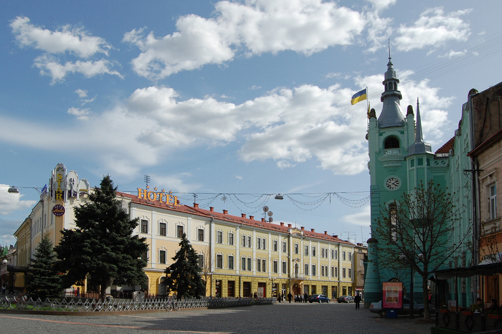

Лабораторна робота №3 / Варіант 7 / №67 у списку
Той самий макет.
Різні правила.
Завдання 2: верстка того самого макета. Середні блоки утворюють ряд Flexbox із тими самими пропорціями та вмістом, що й у версії з float.
Порівняти з float02 / FLEXBOX
Структура варіанта №7
Смуга тексту → два блоки 75% / 25% → смуга зображення.
TEXT / ВЕРХНІЙ БЛОК
Мукачево.
Місто, до якого повертаються.

IMG. / 75%Центр міста
IMG. / НИЖНІЙ БЛОКМісто в деталях
У цій версії середній ряд використовує display: flex; ширини елементів задають flex-basis: 75% і flex-basis: 25%.